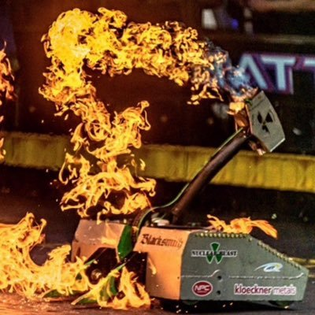
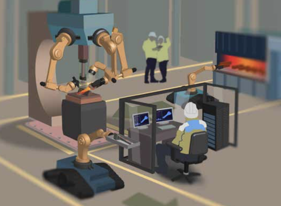

When you think of the word "Blacksmith", you're probably thinking of the traditional hugely built people spending hours around magma and weapons all around them. These machines would be known as BattleBots. they were created to help blacksmiths with their professing, and make constructing weaponry and amror as well as other such things easier for the creator.
A new advancement in technology allows robotics to aid blacksmiths improve their work and allow their work to ease down the difficulty
